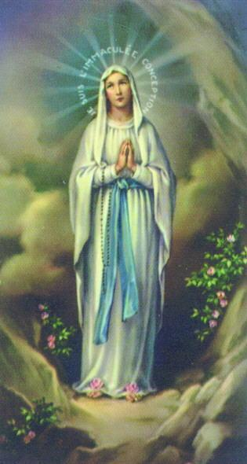
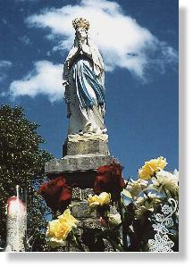
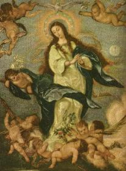
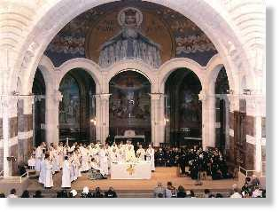

"pressionada" para ir à gruta. Era uma força estranha que nascia em seu interior, que não sabia explicar. Mas era muito cedo e seus pais lhe aconselharam esperar o dia clarear. Às 5 horas da manhã já pôs-se a caminho.
A GRANDE REVELAÇÃO
 - Na manhã do dia 25 de Março de 1858, Bernadete sentiu-se
novamente
- Na manhã do dia 25 de Março de 1858, Bernadete sentiu-se
novamente
Depois de rezar o terço em êxtase, levantou-se e caminhou em direção à Aparição e conversaram:
- "Mademoiselle, quer ter a bondade de me dizer quem és, se faz o favor"?
"Aqueró" sorriu, não respondeu.
Ela insiste na solicitação, a segunda e a terceira vez, obtendo como respostas um sorriso carinhoso e modesto da Visão.
Mas Bernadete tinha a necessidade de saber o nome DELA, precisava levar esta notícia ao Senhor Abade, porque caso contrário, ele não construiria a Capela. Por isso, com mais amor e decisão insistiu uma quarta vez suplicando que ELA dissesse o seu nome.
Desta vez a Aparição não sorriu mais, ficou séria. As mãos que estavam unidas afastaram-se estendendo sobre a terra e depois novamente juntas à altura do peito, levantou os olhos ao Céu em sinal de profunda humildade e obediência a DEUS e disse:
 - "EU SOU A
IMACULADA CONCEIÇÃO".
- "EU SOU A
IMACULADA CONCEIÇÃO".
Dito isto, desapareceu.
Bernadete retornou a si e para não se esquecer das palavras, repetiu-as várias vezes em seguida, tropeçando nas letras que mal sabia pronunciar. Fugiu das perguntas de todos e correu para a casa do Senhor Abade Peyramale. Lá chegando, antes mesmo de cumprimentá-lo gritou:
- "Que soy era Immaculada Councepciou"(no seu dialeto patois de Lourdes) "Eu sou a Imaculada Conceição".
O Abade ficou perplexo. Não sabia se sorria ou se ocultava o seu júbilo, procurando num último esforço, certificar-se do óbvio:
- "Pequena orgulhosa, tu és a Imaculada Conceição"!
- "Não, não, não eu".
Peyramale sente que está diante de uma
grande revelação: "A
Virgem é concebida sem 
Apesar de ter sido decretado em 8 de dezembro de 1854 , o Dogma da Imaculada Conceição de Maria não era aceito por todos os católicos, principalmente por alguns teólogos que defendiam a universalidade da redenção e do Pecado Original. Isto é, atribuíam a Nossa Senhora o mesmo privilégio que teve João Batista, de ter a santificação antes do nascimento . Mas não aceitavam a imunidade do Pecado, isto é, não aceitavam que Maria Santíssima tivesse sido preservada do Pecado Original, mesmo considerando a sua condição especial de MÃE DO REDENTOR.
Por este motivo o Abade explodia intimamente de satisfação e se preocupava em querer saber da realidade. Pela Santíssima Vontade de DEUS, a partir daquele momento Nossa Senhora foi colocada no ápice de um digno pedestal, deixando realçar com todo brilho, a sua grandeza notável e ilimitada, porque pela Vontade do CRIADOR, ELA própria confirmava que teve uma Conceição Imaculada. Por isso Peyramale se debatia:
- "Uma Senhora não pode usar esse nome! Tu enganaste sabes o que isso quer dizer"?
Maria Bernarda diz que não, abanando a cabeça.
- "Então como podes dizê-lo, se não compreendes o que é"?
- "Repeti todo o caminho".
No silêncio que se seguiu, Peyramale ficou pensativo com um suave sorriso nos lábios. Bernadete interrompe o silêncio e diz:
- "ELA sempre quer a Capela"...
O Abade no íntimo deve ter respondido que não só uma Capela, mas uma monumental Basílica. A partir daquele momento a DAMA estava dispensada de fazer qualquer milagre, de fazer florir a roseira selvagem da gruta. Era ELA, a MÃE DE DEUS, a Nossa Querida Mãe que veio visitar-nos com o objetivo de revelar-nos um grande mistério divino e pedir penitência ao mundo, para que todos rezassem pela conversão dos pecadores e tivessem uma conduta responsável e digna. Peyramale estava emocionado. Tentava esconder sua alegria e por isso, para salvar as aparências, falou com ela:
- "Vai para casa, falaremos outro dia".
Os dias passaram e o clero com muita
alegria e vibração comemorou a revelação do 
Dia 6 de abril, Bernadete sentiu-se novamente "pressionada" para voltar à gruta. Aquela força estranha e agradável a impulsionava para Massabieille. Como já havia passado das 15 horas, foi encontrar-se com o Padre Pomian no confessionário. Algumas pessoas que a observava, se incumbiram de espalhar os boatos. A cidade ficou na expectativa de algum acontecimento.
No dia seguinte, quarta-feira da Páscoa, antes do sol nascer ela já estava na gruta, acompanhada inicialmente por uma centena de pessoas que logo aumentou para 1.000, quando iniciou a reza do terço.
Nas primeiras AVE MARIA da primeira dezena, entrou em êxtase. O Doutor Dozous, que vinha estudando o seu caso, surge no meio da multidão pedindo passagem, pois queria estar ao lado dela, para presenciar suas reações fisionômicas. E abrindo passagem entre o povo que contritamente rezava dizia:
- "Não venho como inimigo, mas em nome da ciência. Corri e não posso me expor às correntes de ar. Só eu posso verificar o fato religioso que aqui se dá, deixem-me prosseguir este estudo".
Neste dia, ela utilizava uma grande vela que se apoiava no chão. Foi fornecida por uma pessoa que tinha alcançado uma graça. Com sua mão tentava proteger a chama da vela, da corrente de ar. Mas no transe em que se encontrava, não posicionou corretamente a mão esquerda em forma de concha sobre o pavio aceso, de modo que a chama da vela passava por entre os seus dedos.
- "Mas ela se queima" - gritaram da multidão.
- "Deixe estar" - pediu Dozous.
Ele não acreditava naquilo que seus olhos viam, os sorrisos de Bernadete, os Sinais da Cruz, feitos com tanta graça , sua fisionomia séria em vários momentos compartilhando duma tristeza da Visão e a chama da vela que passava por entre os seus dedos, sem queimá-los, sem provocar dores.
Terminado o êxtase, examinou as mãos da vidente e não encontrou o menor sinal de queimadura. Para testar a sua sensibilidade, acendeu a vela e sem que ela percebesse, aproximou a chama de sua mão. Ela gritou e protestou: "Está querendo me queimar"? Dozous, homem de atitudes extremas, viu crescer repentinamente em seu coração uma fé gigantesca. Da mesma forma que seu caráter explosivo o levava muitas vezes a defender suas convicções abertamente e com decisão, espalhou a novidade com disposição, convencido de que esteve diante do sobrenatural na gruta de Massabieille.
No "Café Francês",
ponto de convergência dos
"bate-papos" também
dos 
- "É um fato sobrenatural para mim, ver Bernadete em êxtase, ajoelhada diante da gruta segurando uma vela acesa e cobrindo a chama com a mão esquerda, sem que pareça sentir a mínima impressão do contato dela com o fogo. Examinei-a. Não encontrei nem o mais ligeiro sinal de queimadura".
(Na foto ao lado, interior da Basílica de Nossa Senhora do Rosário)
Mas continuava a existir também os descrentes, aqueles que não aceitavam os fatos e caçoavam dos frequentadores da gruta. Eles atuaram sobre os administradores pedindo providências contra "aquilo" que chamavam de "palhaçada" . O Prefeito resolveu proibir o acesso a gruta. Mandou retirar todos os objetos religiosos que tinham sido colocados lá.
Os pais e amigos de Bernadete, para evitar complicações, a enviaram para Cauterets, a titulo de tratar de sua asma. Contudo a sua ausência em nada influiu no fervor das almas piedosas, que se manifestavam claramente todos os dias. Eram organizadas procissões, cânticos e orações com a maior participação possível. Por outro lado, alguns procuravam dotar a gruta de certo conforto, colocando na fonte de água uma bacia com três torneiras, para facilitar a utilização. Pedreiros, carpinteiros e funileiros trabalhavam gratuitamente e com desprendimento, melhorando o acesso, colocando uma tábua furada para receber as velas, empregando os seus esforços com o objetivo de tornar a gruta um recanto aprazível de devoção mariana.
As autoridades vendo que não conseguiam nem acabar e nem diminuir a frequência das visitas à gruta, decidem fechá-la. No dia 15 de junho o Prefeito mandou fazer uma barreira constituída por uma paliçada de madeira, que isolava a área da gruta.
O povo, no dia 17, destruiu a paliçada. As barreiras são reconstruídas no dia 18 e são demolidas pelo povo na noite do dia 27. Tornam a serem reconstruídas no dia 28 de junho, para novamente serem demolidas na noite do dia 4 de julho.
No dia 8 de Julho a Igreja intervêm oficialmente, pela primeira vez, pedindo tranquilidade ao povo e respeito às autoridades.
No dia 10 foram levantadas as barricadas novamente. Bernadete mantinha-se distante e indiferente a toda esta movimentação. Nas oportunidades que surgiam, recomendava obediência e desaconselhava que arrebentassem a paliçada na gruta.
No dia 16 de julho, festa do Monte Carmelo, ela sentiu novamente aquela "atração interior" e ficou "pressionada" para ir à gruta, como das vezes anteriores. Esperou pelo entardecer e lá chegou por um caminho que ninguém suspeitou. Ela foi em companhia de sua tia Lucilia, camuflada com um capuz emprestado.
Junto à cerca de tábuas que isolava a gruta, encontrava-se um grupo de pessoas, que de joelhos e silenciosamente rezavam. Ela ajoelhou e acendeu a sua vela. Duas congregadas marianas que a reconheceram, juntaram-se a ela e à sua tia, em silêncio.
Apenas começara o terço, as suas mãos afastaram-se comovidas, numa saudação de alegria e surpresa. Nossa Senhora estava lá. A sua face iluminou-se e suas feições adquiriram uma indescritível formosura. Terminada a reza do terço, pelo seu rosto podia-se ver estampada a felicidade que brotava de seu íntimo, a alegria de mais uma vez ter-se encontrado com a MÃE de DEUS. Ela não comentou nada. No caminho de regresso, apenas disse:
 - "Eu não
via as tábuas nem o Gave. Parecia-me que estava na gruta, sem maior
distancia que das outras vezes. Não via senão a SANTÍSSIMA
VIRGEM MARIA".
- "Eu não
via as tábuas nem o Gave. Parecia-me que estava na gruta, sem maior
distancia que das outras vezes. Não via senão a SANTÍSSIMA
VIRGEM MARIA".
E neste mundo, foi a última vez. Aconteceu como se fosse uma visita de despedida, NOSSA SENHORA sempre bondosa, cheia de carinho e atenção, desceu à terra mais esta vez, para o derradeiro adeus à sua amiga.